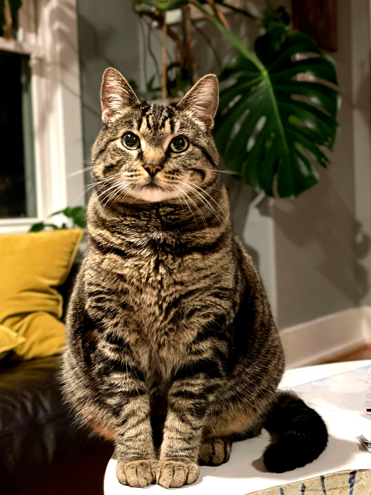

IMG_6746_Original.jpeg
Multi-LLM Analysis
76.5/100
Consensus Score
Original Review
The photograph has good subject clarity and a pleasing composition. However, it is a bit underexposed, and a slight yellow cast in the background distracts from the main subject. Adjusting these elements would enhance the image significantly.
- Increase overall brightness by 15%
- Slightly increase sharpness on the cat's face
- Reduce yellow color cast in the background cushion
Analysis failed: Error code: 401 - {'error': {'message': 'Incorrect API key provided: sk-proj-********************************************************************************************************************************************************98YA. You can find your API key at https://platform.openai.com/account/api-keys.', 'type': 'invalid_request_error', 'code': 'invalid_api_key', 'param': None}, 'status': 401}
Strong composition with good eye contact and pleasant bokeh, but the image is slightly underexposed making some fur details lost in shadows. The lighting creates nice depth but needs enhancement to fully showcase the subject's beautiful markings.
- Increase overall exposure by 15-20% to brighten the shadows and reveal more detail in the cat's fur
- Boost contrast by 10-15% to make the tabby markings more defined
- Apply slight sharpening to enhance the fine details in the whiskers and fur texture
Combined Improvements Applied:
- Increase overall brightness by 15%
- Slightly increase sharpness on the cat's face
- Reduce yellow color cast in the background cushion
- Apply a subtle vignette to draw more focus to the cat
- Increase overall exposure by 15-20% to brighten the shadows and reveal more detail in the cat's fur
- Boost contrast by 10-15% to make the tabby markings more defined
- Apply slight sharpening to enhance the fine details in the whiskers and fur texture
- Warm the white balance by 200K to reduce the cool tone and create a more inviting atmosphere
Before & After Comparison